EXPÉRIENCES
Cheffe de projet digital — 7+2 ads concept
/Web · E-commerce · WordPress · SEO
UX/UI Designer Freelance
/PME · TPE · Figma · Identité visuelle
Product Designer — DSI Veolia Eau
/Parcours complexes · Recherche UX · Figma
Product Designer — Garrice
/E-commerce semi-luxe · Shopify · Refonte
Product Designer — NHCO × Chiesi
/IA · B2B/B2C · Fidélisation
PROJETS
NHCO × Chiesi
Sept. 2025 – Avril 2026 · Bois-Colombes- UR/UX/UI B2B/B2C · IA conversationnelle · Fidélisation
- Recherche terrain officines · Benchmark produits IA
- Conception interfaces B2B et parcours B2C
Assistant Conversationnel
Analyse V1 · Cadrage UX · Recherche terrain · Benchmark
Back-office Aminobot
Analyse existant · Cadrage V1 · Structuration V2 · Conception UI
Expérience Client & Fidélisation
Recadrage · Profils · Benchmark · Ateliers · Structuration
DSI Veolia Eau
Sept. 2022 – Janv. 2025 · Saint-Maurice- Design d'interface : maquettes interactives Figma, contribution design system
- Recherche utilisateur : entretiens qualitatifs, analyse verbatims
- Arborescence et parcours utilisateurs complexes
- Ateliers UX avec les métiers pour aligner design et besoins opérationnels
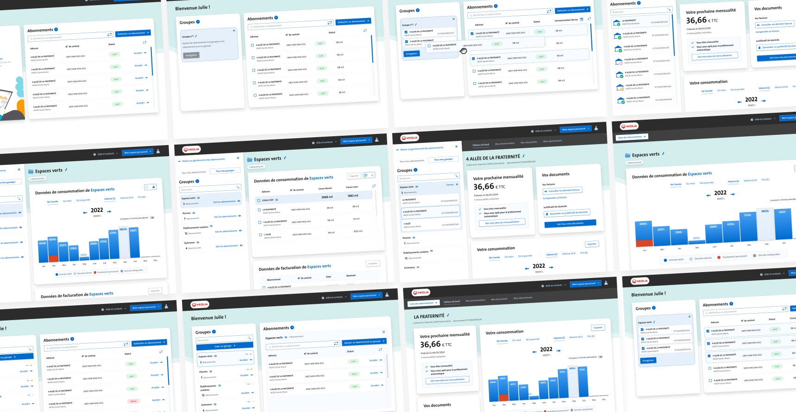
Projet Grand Compte
Qualitatif · Quantitatif · Hi-fi
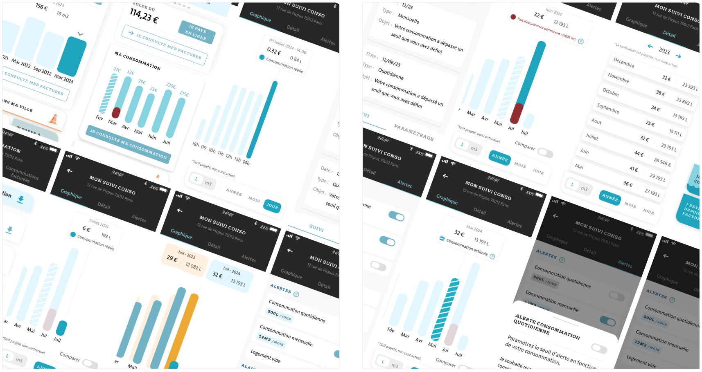
Application Mobile
Parcours · Tests · iOS
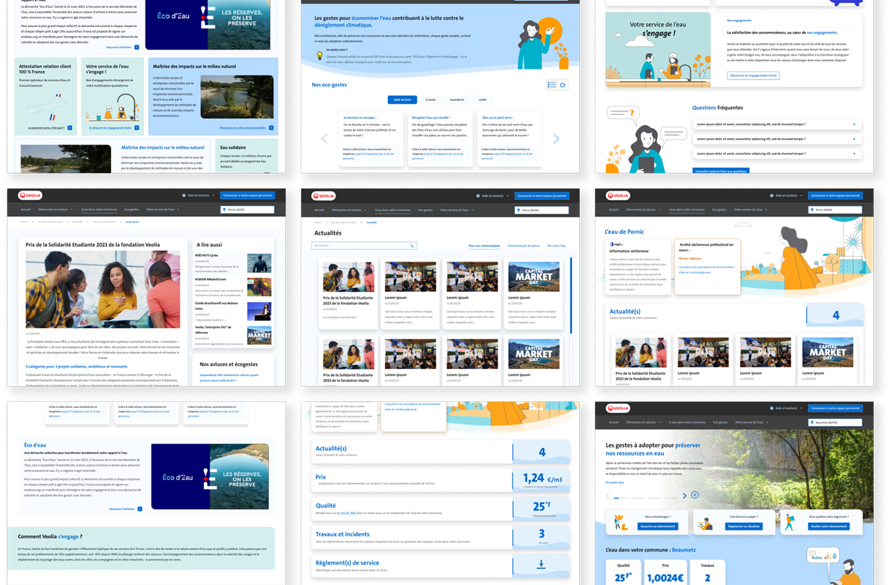
Portail Consommateurs
Multi-marques · Design System
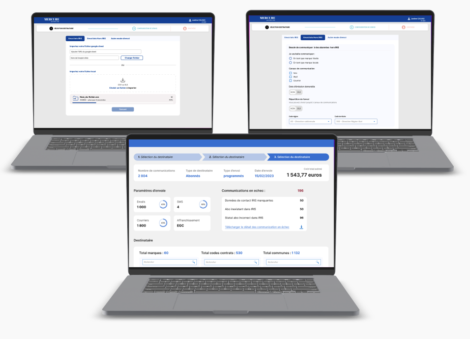
Applications Internes
Mercure · Observatoire · IRIS
Garrice
Mars – Septembre 2025 · Paris- Audit UX et refonte graphique du site e-commerce semi-luxe
- Analyse parcours utilisateurs (données analytiques, heatmaps)
- Benchmark concurrentiel mode/luxe · Conception wireframes et maquettes Figma
- Suivi d'implémentation jusqu'au lancement sur Shopify
Refonte E-commerce Garrice
Audit UX · Benchmark · Maquettes Figma · Implémentation Shopify
Justine Calvao
x Veolia
Rôle : Recherche utilisateur et design d'interface Outils : Figma, Figjam, Miro, Notion, Dovetail Temps : 2 ans et 4 mois
🏢 Contexte Veolia
Veolia a lancé une restructuration de sa DSI pour améliorer la relation client, avec la mise en place d'un nouveau CRM et la refonte de l'agence en ligne. L'objectif était de moderniser les outils digitaux et de renforcer la communication avec les clients.
🤝🏼 Collaboration
J'ai collaboré étroitement avec les métiers, les Business Analysts, les développeurs, et les utilisateurs finaux. Mon rôle était de capter les besoins métiers et d'intégrer une approche UX/UI pour créer des solutions alignées avec les attentes des utilisateurs et des différentes parties prenantes.
🎯 Mon Rôle
En tant qu'UX/UI Designer, ma mission était de redéfinir les parcours clients et d'améliorer l'expérience utilisateur. Dans un contexte où la démarche UX/UI était encore peu développée, j'ai travaillé à rendre les interfaces plus accessibles et intuitives.
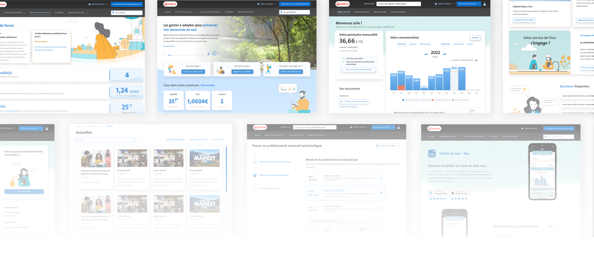
Projet grand compte
Espace personnel dédié aux professionnels
Optimisation de l'espace personnel pour les professionnels ayant un grand nombre d'abonnements
📋 Un peu de contexte
A date, un parcours à été développé pour l'ensemble de nos clients sans prendre en compte la complexité des usages de nos clients professionnels. La solution proposée ne permet pas de naviguer de façon fluide et optimale pour nos abonnés ayant un grand nombre d'abonnements (grands comptes, collectivités,...).
🎯 Objectifs
Améliorer la navigation sur la nouvelle agence en ligne pour nos clients professionnels en répondant à leurs attentes et besoins pour une gestion simplifiée, fluidifiée et sécurisée de leurs abonnements. Permettre une navigation optimisée pour les usagers de Veolia ayant de nombreux points d'eau.
Problématique
Comment améliorer l'expérience de navigation pour les professionnels ayant un grand nombre d'abonnements, afin de leur permettre de gérer efficacement leurs contrats, alors que le parcours actuel est principalement adapté aux utilisateurs particuliers avec un nombre limité de contrats et permet uniquement de consulter les abonnements de façon unitaire ?
Un projet en 5 étapes
Etude Qualitative
Etude Quantitative
Analyse des Résultats
UI Design
Tests Utilisateurs
Méthodologie des entretiens avec les utilisateurs
Co définition des objectifs et rédaction du guide d'entretien
Sur différentes régions pour chacune des 4 typologies de clients
Prise de contact et programmation des entretiens
Interroger, comprendre, déceler les besoins et problématiques des utilisateurs.
Analyse et synthèse des enseignements recueillis
Déroulement des entretiens
- Identifier et comprendre les besoins et attentes
- Se renseigner sur les informations dont ils ont besoin pour gérer leur compte et connaître leur environnement de travail
- Aider nos utilisateurs à partager leur expérience pour détecter les potentiels points de friction ou irritants rencontrés sur l'outil qu'ils utilisent actuellement ainsi que les fonctionnalités utiles et à garder pour les versions suivantes.
- 4 collectivités (mairie, communauté de commune)
- 4 grands professionnels régionaux (copropriétés, bailleurs sociaux)
- 4 grands professionnels multi régions avec plusieurs adresses de facturation
Guide d'entretien
Pour rédiger le protocole et le guide d'entretien UX du projet grand compte, je me suis appuyée sur une approche centrée sur l'utilisateur en utilisant les principes du Design Thinking (empathie, définition, idéation, prototypage, tests).
J'ai commencé par identifier les objectifs clés du projet et les besoins des utilisateurs finaux, en collaboration avec les parties prenantes. L'accent a été mis sur le recueil des besoins et des attentes des utilisateurs, en leur donnant l'opportunité de s'exprimer librement sur leurs attentes, frustrations, et suggestions. Le guide d'entretien a été structuré autour de questions ouvertes pour encourager cette expression.
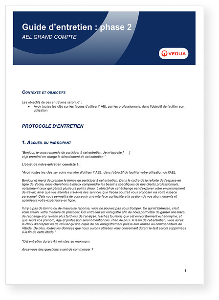
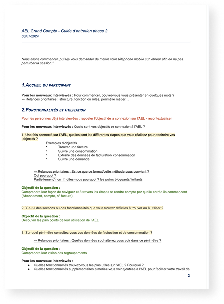
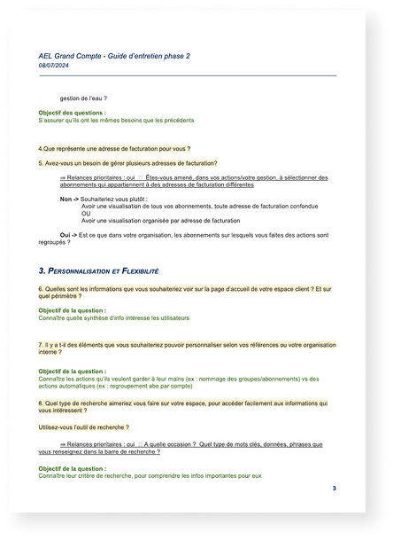
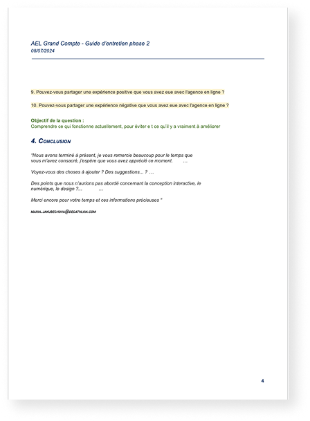
Analyse des entretiens avec les utilisateurs
Analyse de données
Les entretiens ont été restitués et analysés sur la plateforme Dovetail. Différentes balises ont été créées sur l'outil : catégoriser les données, permettant ainsi d'identifier des tendances, des thèmes récurrents, et d'extraire des insights pertinents à partir des données qualitatives.
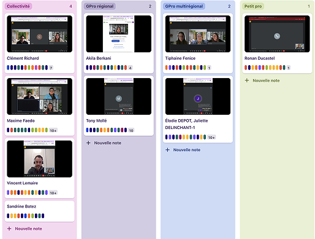
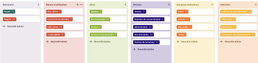
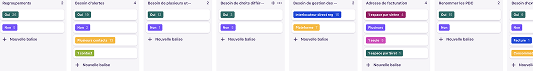
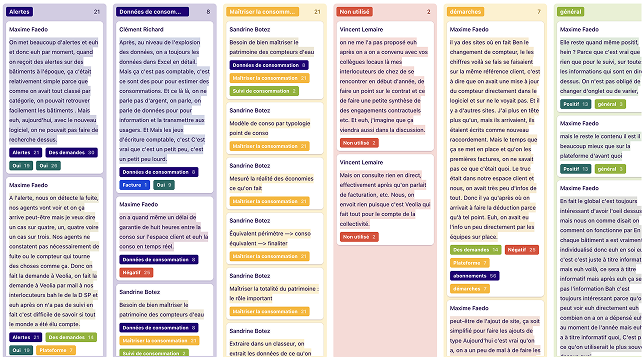
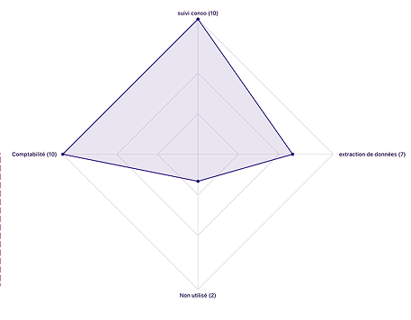
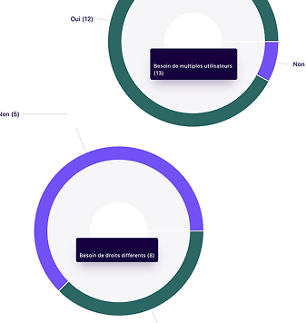
Quelques
Verbatims des
utilisateurs
interviewés
Méthodologie de l'étude quantitative
L'étude quantitative permet de savoir si les insights recueillis lors des entretiens de l'étude qualitative sont représentatifs du plus grand nombre des usagers.
Les questions sont formulées à partir des insights obtenus suite à l'étude qualitative dans le but de mesurer les comportements et opinions des usagers.
Une cinquantaine de personnes, tout profil confondu parmi les professionnels.
Envoi à partir d'une boite mail générique. Rédaction du mail à destination des clients interrogés.
Questionnaire envoyé à partir d'une boite mail générique Veolia.
Analyse et synthèse des enseignements recueillis
Réalisation du questionnaire
Dans le cadre de notre projet Grand Compte, nous avons conçu un formulaire pour une étude quantitative visant à confirmer les résultats obtenus lors de l'étude qualitative préalable. La création de ce formulaire a impliqué plusieurs étapes clés pour garantir sa pertinence et son efficacité.
Tout d'abord, nous avons analysé les conclusions principales de l'étude qualitative afin d'identifier les variables et indicateurs pertinents à mesurer quantitativement. Cette analyse nous a permis de définir des questions précises et ciblées, alignées avec les thèmes et les hypothèses formulés lors de l'étude qualitative.
Ensuite, nous avons élaboré le questionnaire en veillant à ce qu'il soit clair, structuré et facilement compréhensible par les répondants. Nous avons opté pour une combinaison de questions fermées et de questions à échelle de Likert pour obtenir des données à la fois quantitatives et comparables.
Après la conception initiale, nous avons procédé à une série d'ajustements pour optimiser la clarté et la précision des questions, en nous basant sur les objectifs de l'étude et les feedbacks internes. Une version finale a ensuite été validée avant le déploiement de l'étude.
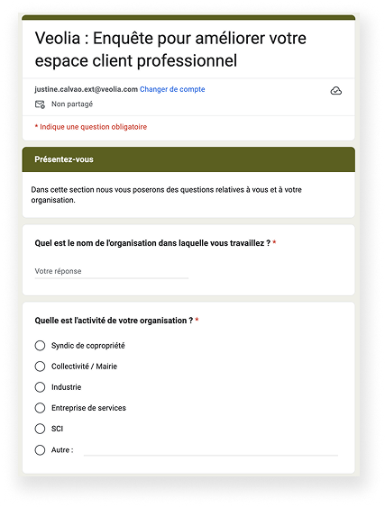
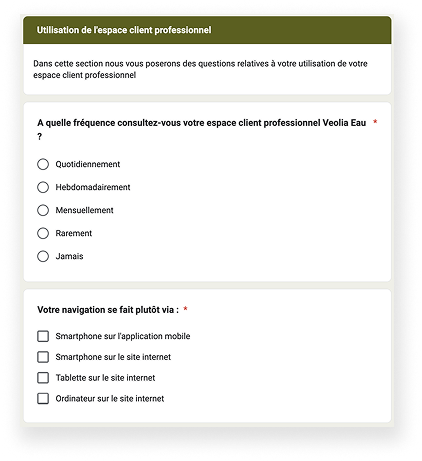
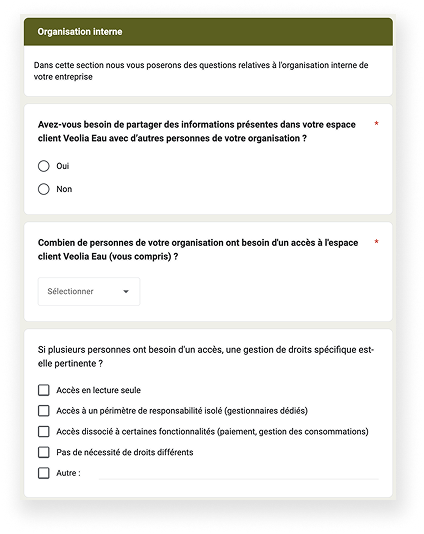
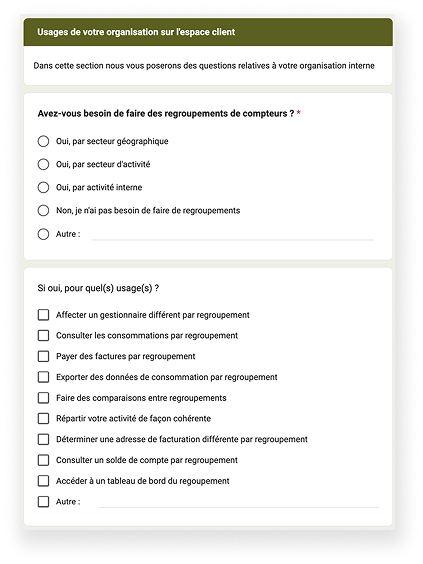
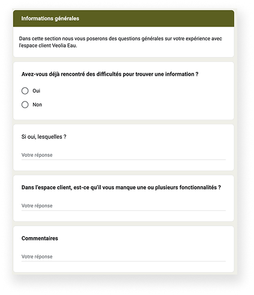
Les ateliers
Explorer et compléter les micro parcours identifiés, ainsi qu'identifier les écrans impactés.
Rédiger le protocole de test en collaboration avec les métiers.
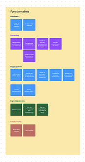
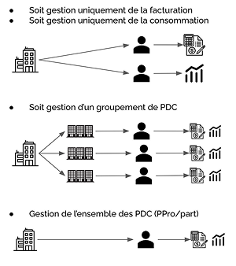
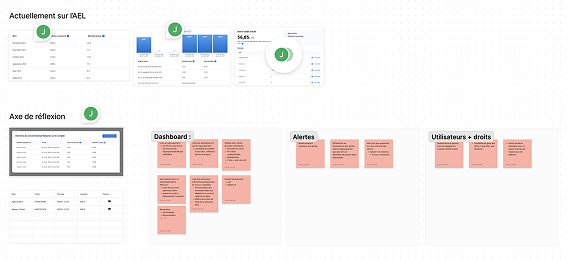
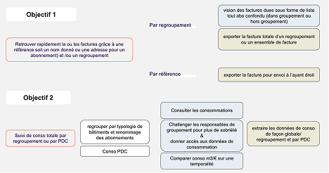
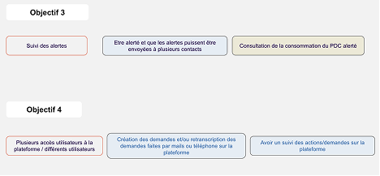
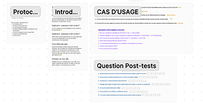
Les Userflow
Guide de référence navigationLe Userflow permet d'optimiser le parcours des utilisateurs en fonction de leurs besoins spécifiques identifiés lors de la recherche. Cela garantit que les fonctionnalités et interactions de l'espace professionnel sont bien alignées avec les attentes des utilisateurs, facilitant ainsi leur navigation et leur efficacité au sein de l'interface. Le user flow sert également de guide pour s'assurer que l'expérience utilisateur reste fluide et cohérente avec les insights recueillis lors de l'étude.
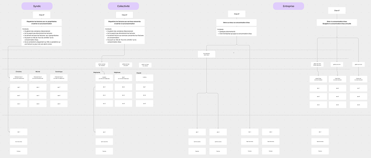
Le Macro Parcours
Vision d'ensemble avant maquettesLes macros parcours ont été créés avant les wireframes pour obtenir une vision d'ensemble afin de nous aider à identifier tous les cas possibles avant de passer à la conception des maquettes.
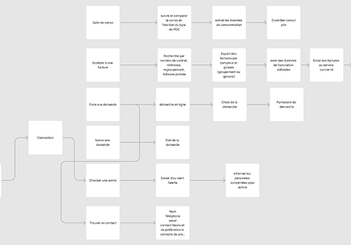
Maquettes Hi-fi
Méthodologie de tests utilisateurs
Les cas d'usage à tester seront ceux améliorés suite aux études qualitatives et quantitatives.
Utilisateurs identifiés permettant de tester les maquettes réalisées sur la base des conclusions tirées de l'étude.
Analyse et synthèse des enseignements recueillis
Déroulement des tests
- Évaluer la navigation cible maquettée grâce aux études menées
- Repérer les éventuels points de frictions et les insights
- Observer la façon dont l'utilisateur se sert de la solution proposée
- 4 collectivités (mairie, communauté de commune)
- 4 grands professionnels régionaux (copropriétés, bailleurs sociaux)
- 4 grands professionnels multi régions avec plusieurs adresses de facturation
Cadrage des tests
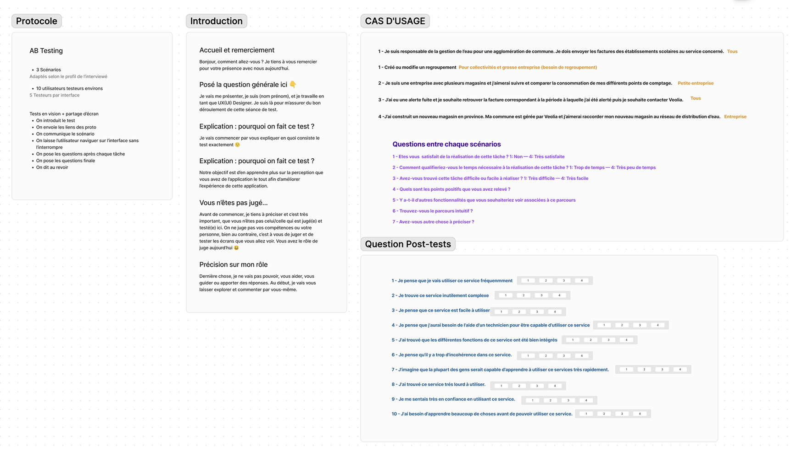
Veolia & moi
Application mobile
Refonte graphique du suivi de consommation
📱 Un peu de contexte
L'application mobile de Veolia permet de suivre la consommation d'eau, mais son interface actuelle est peu intuitive et difficile à naviguer. Les utilisateurs éprouvent des difficultés à accéder et comprendre leurs données. Il était donc nécessaire de moderniser l'application pour rendre l'information plus accessible et améliorer l'expérience globale.
🎯 Objectifs
L'objectif était de refondre l'interface de suivi de consommation de l'application mobile de Veolia afin de simplifier la navigation, améliorer la lisibilité des données et offrir une expérience utilisateur plus fluide et moderne.
Un projet en plusieurs étapes
Détection du besoin
Avis sur les plateformes de téléchargementPlusieurs avis négatifs concernant la fonctionnalité de suivi de consommation. Un design bloquant pour accéder aux données.
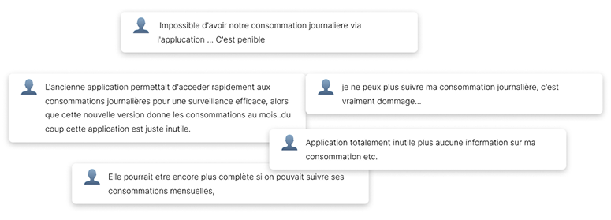
Audit
Audit général de l'applicationUn audit de l'ensemble de l'application a été fait pour pouvoir identifier les parcours bloquants. Toutefois, seul le suivi de consommation sera amélioré dans un premier temps.
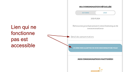
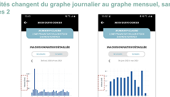
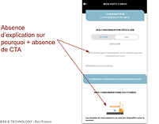
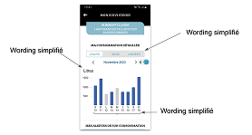
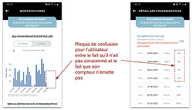
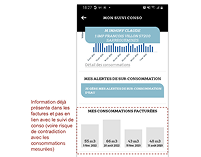
User story map
User Story mapL'user story map permet de visualiser l'ensemble du parcours utilisateur, prioriser les fonctionnalités et aligner l'équipe sur une vision commune du produit.
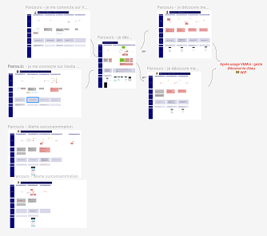
Benchmark du suivi de consommation
BenchmarkUn Benchmark a été fait sur les applications de fournisseurs d'énergie pour comparer l'affichage et la navigation du suivi de consommation.
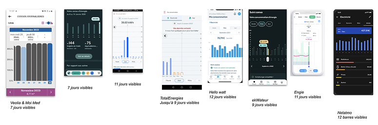
Parcours utilisateur
UserflowVisualiser et comprendre les étapes que l'utilisateur effectue pour suivre sa consommation.
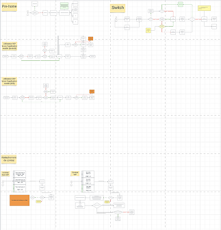
Maquettes Hi-fi
Tests utilisateurs
Le but de ce test est de déterminer si les nouvelles fonctionnalités développées à partir de nos hypothèses répondent aux besoins des utilisateurs et aux objectifs de Veolia.
Déroulement des tests
- Méthode Lean UX sur un court parcours en maquettes hautes fidélités avec micro-interactions
- 3 écrans sous la forme d'un questionnaire contextualisé
- Panel : utilisateurs identifiés à partir des avis sur l'application mobile
- Analyse et synthèse des enseignements recueillis
- Questions avant le test
- Questions après chaque scénario testé
- Questions après le test
Cadrage des tests
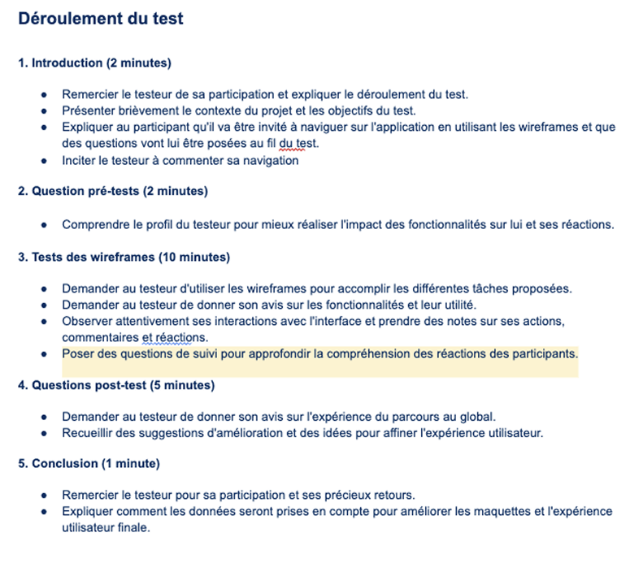
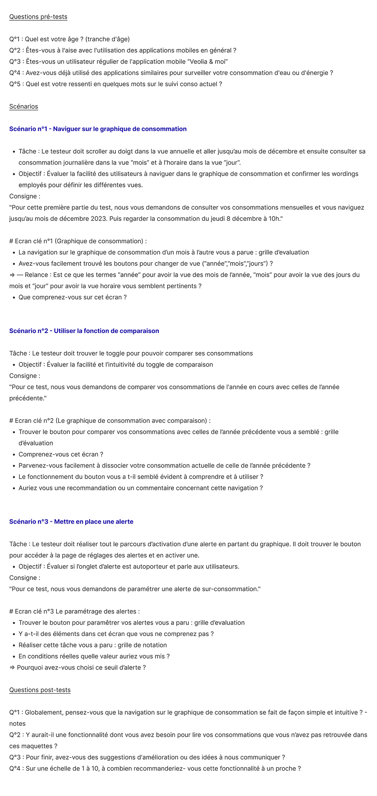
Prototype testé
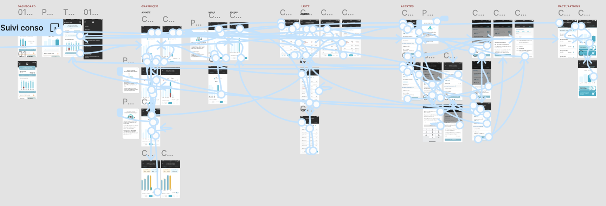
Portail consommateurs
Conception des écrans du portail consommateurs de Veolia
📋 Un peu de contexte
J'ai été chargée de concevoir les écrans de l'espace portail consommateurs de Veolia. Il s'agit de la porte d'entrée pour le consommateur pour accéder à son espace personnel, réaliser ses démarches et consulter les informations de son service de l'eau.
⚡ Challenge
Mon défi principal était de concevoir une interface flexible, capable de s'ajuster aux contributions des métiers tout en restant intuitive pour les utilisateurs finaux.
🧭 Approche
Pour répondre à ce besoin, j'ai mené des ateliers pour capter les exigences des métiers. Ces ateliers visaient à comprendre comment le design devait s'adapter aux différents types de contenu et à la localisation des utilisateurs.
Maquettes Hi-fi
Maquettes Hi-fi marques locales
Un enjeu important était lié à la notion de marque blanche chez Veolia.
Certaines collectivités délèguent la gestion de l'eau à Veolia mais souhaitent opérer avec leur propre marque. Pour répondre à cette exigence, j'ai développé une charte graphique personnalisée pour chaque marque locale à partir d'un template commun, garantissant ainsi une identité visuelle unique tout en maintenant la cohérence avec l'identité globale de Veolia.
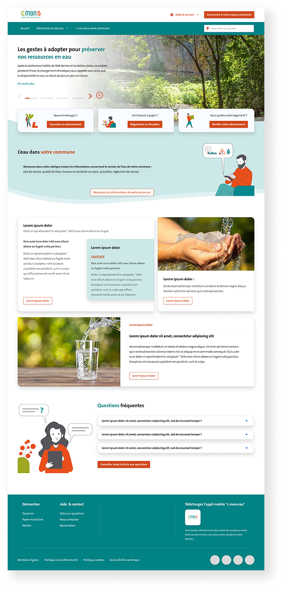
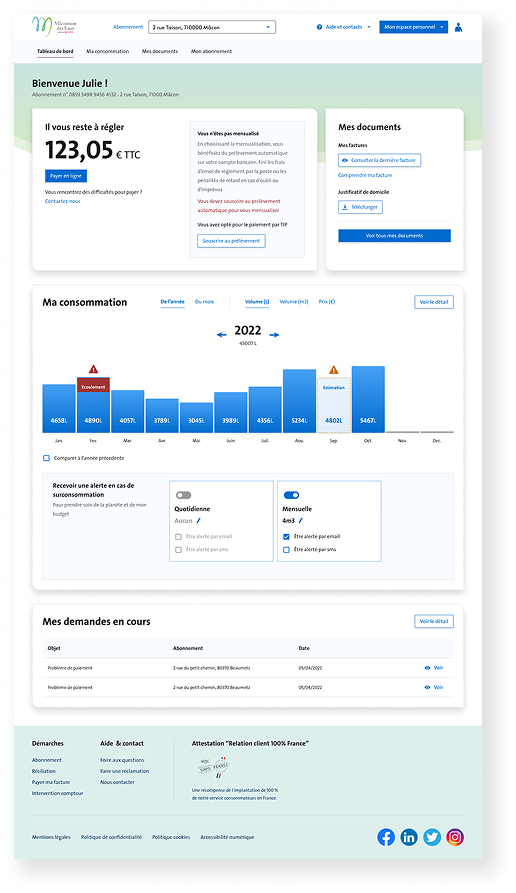
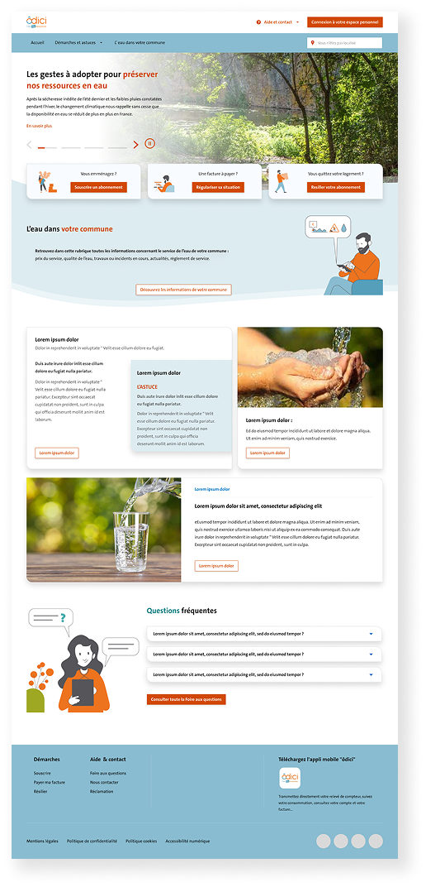
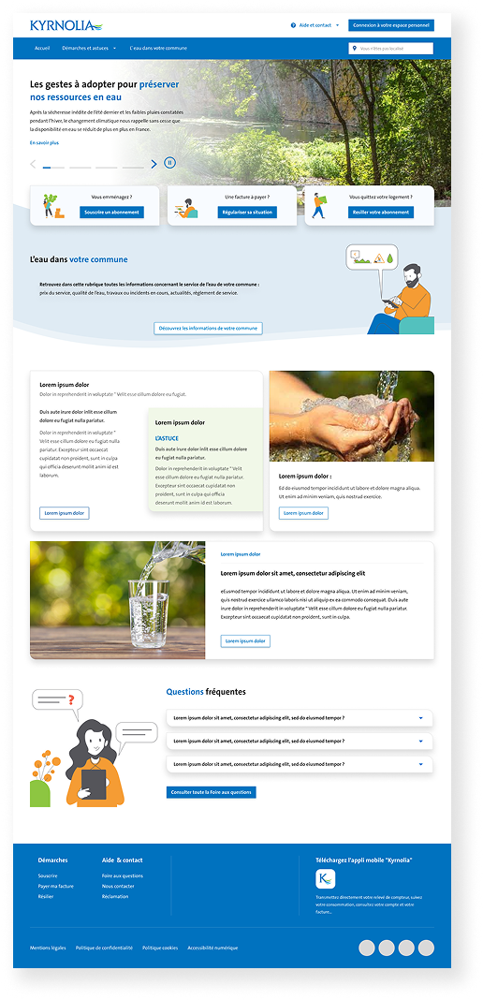
Applications internes
Besoins ponctuels sur les applications métier
Application Mercure
Envoi des communications sortantes en masse
🔧 Besoin métier
Créer une interface utilisateur intuitive permettant au département de la direction consommateurs de Veolia d'envoyer des courriers, sms et e-mails en masse de manière efficace. L'application doit offrir la possibilité de paramétrer les envois en fonction des différentes marques du groupe, tout en permettant de choisir entre plusieurs canaux d'envoi (email, courrier postal, SMS). L'objectif final était de simplifier le processus d'envoi tout en assurant un suivi en temps réel et une restitution complète des envois effectués.
🧢 Mon rôle
Concevoir l'interface utilisateur en me basant sur les besoins des utilisateurs, en créant des Wireframes et des prototypes interactifs. J'assure une expérience fluide en intégrant les options de personnalisation et de gestion des canaux d'envoi. Je collabore avec les équipes de développement et les parties prenantes pour garantir que l'application réponde aux attentes et offre une expérience utilisateur optimale.
Observatoire des usages
🔧 Besoin métier
Concevoir l'arborescence, l'architecture de l'information et le design de l'interface de l'Observatoire des Usages pour permettre aux équipes de Veolia d'analyser et anticiper les volumes de consommation par segment et usage. L'objectif est de faciliter le pilotage des actions commerciales, d'améliorer la performance, et de fixer des objectifs de réduction de consommation, tout en assurant l'adoption durable de l'outil par les différentes filières internes.
🧢 Mon rôle
Je conçois l'interface de l'Observatoire des usages, en rendant les données de consommation facilement accessibles et exploitables pour les utilisateurs. Je crée des designs intuitifs pour faciliter le pilotage des actions commerciales et l'analyse des performances, tout en collaborant avec les équipes pour garantir que l'outil réponde aux besoins stratégiques des différentes filières.
Atelier
L'atelier visait à comprendre les besoins des utilisateurs de l'Observatoire des Usages et à les aligner avec la stratégie de Veolia. L'objectif était d'identifier les problèmes et les axes de conception, d'analyser les méthodes de travail des utilisateurs, d'organiser et de prioriser les idées, et de concevoir des wireframes basés sur les attentes des utilisateurs. Cela a permis de définir clairement les exigences pour une interface adaptée.
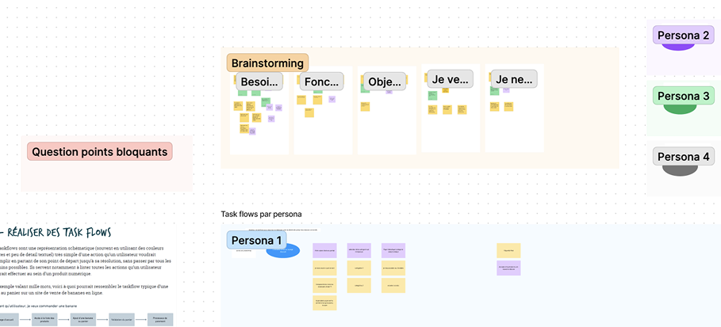
Wireframe
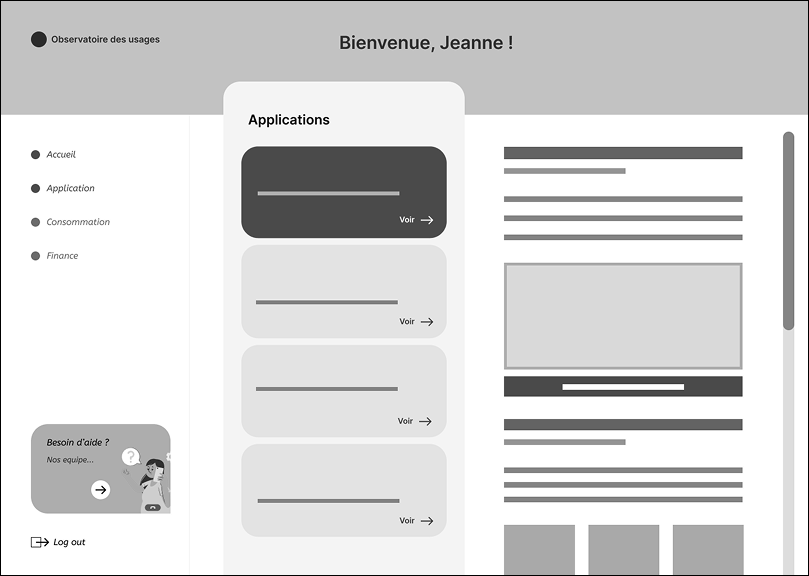
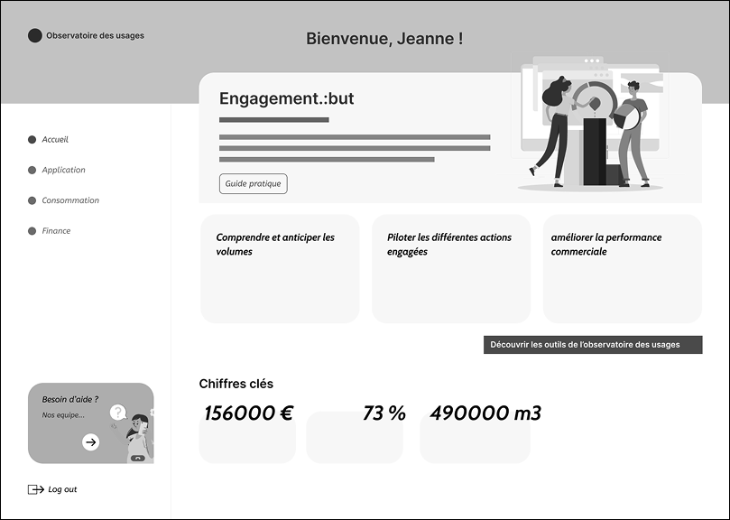
Application IRIS (Salesforce CRM)
Refonte du design du fil d'événements
🔧 Besoin métier
Améliorer l'interface du fil d'événements IRIS, intégré dans Salesforce, pour rendre la gestion des interactions clients plus efficace. L'objectif était de fournir à toutes les typologies de conseillers clientèle (en agence comme en CRC) un cockpit centralisant l'ensemble des interactions avec les clients ainsi que les modifications liées à ces derniers ou à leurs abonnements.
🧢 Mon rôle
J'optimise la présentation des événements et des informations liées aux clients, en facilitant la navigation et la prise de décision pour les utilisateurs du CRM dans le but d'amélioration l'expérience utilisateur et la lisibilité. Je conçois des Wireframes et des prototypes interactifs, tout en travaillant étroitement avec les équipes techniques pour assurer que les nouvelles fonctionnalités s'intègrent harmonieusement dans le CRM.
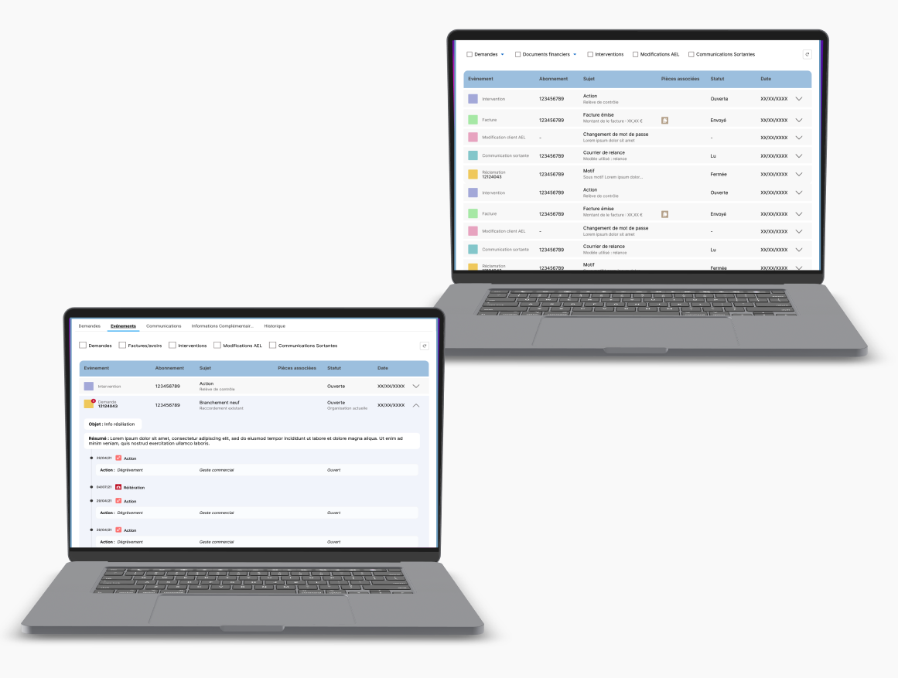
Justine Calvao
x NHCO
Product Designer
Secteur : Micronutrition, groupe Chiesi Outils : Figma, Figjam, Notion, Dovetail Temps : 8 mois
📌 À propos de NHCO
NHCO est un laboratoire spécialisé en micronutrition, intégré au groupe Chiesi.
À mon arrivée, l'entreprise évoluait dans un environnement en transformation, avec une volonté de structurer certains sujets et d'explorer de nouveaux leviers, notamment autour de l'IA et de l'expérience client. Plusieurs initiatives étaient en réflexion, mais nécessitaient encore d'être clarifiées, cadrées et approfondies pour poser des bases solides.
🤝🏼 Collaboration
Rattachée à l'IT, j'intervenais de manière transverse aux côtés des Product Owners, des équipes métiers, marketing et techniques.
Cette collaboration étroite, inscrite dans un fonctionnement agile, me permettait de faire le lien entre vision produit, attentes internes, usages et contraintes de mise en œuvre, afin d'accompagner les sujets vers des réponses plus claires, cohérentes et réalisables.
🧢 Mon Rôle
Mon rôle en tant que Product Designer consistait à structurer des sujets encore peu cadrés en faisant émerger les besoins réels derrière les demandes initiales et en replaçant les usages au centre de la réflexion.
J'étais également attendue sur la définition d'une démarche UX adaptée à la maturité de chaque projet, afin de guider l'exploration, clarifier les parcours, faire émerger des recommandations et orienter la conception de solutions. Cette approche me plaçait à l'interface des enjeux business, métier, utilisateur et techniques, avec pour objectif de transformer des intentions parfois floues en réponses plus lisibles, plus cohérentes et plus actionnables.

Assistant conversationnel · IA
Aminobot
Assistant conversationnel dédié aux équipes terrain et aux équipes officinales
📌 Un peu de contexte
NHCO distribue principalement ses produits en pharmacie.
Lorsqu'une question produit se pose en officine, notamment sur des sujets techniques ou sensibles, la réponse passe encore par une chaîne d'intermédiaires entre équipes officinales, forces de vente et référents scientifiques internes. Ce circuit complexifie l'accès à l'information, allonge les délais de réponse et génère des sollicitations répétées sur des questions récurrentes.
À mon arrivée, une première version d'Aminobot était en cours de déploiement pour les forces de vente. La réflexion autour d'une V2 ouvrait un nouveau chantier : concevoir une solution capable de répondre plus directement aux besoins des équipes officinales, dans un cadre d'usage plus exigeant.
🎯 Objectifs
L'objectif du projet était d'améliorer l'accès à l'information produit en réduisant les intermédiaires et en apportant une réponse plus rapide, plus fiable et plus adaptée aux réalités du terrain. Au-delà de l'outil lui-même, l'enjeu était de définir une solution pertinente pour les équipes officinales, en tenant compte de leurs questions réelles, de leurs conditions d'usage, de leurs attentes en matière de réponse et des conditions d'adoption du dispositif.
🧢 Mon Rôle
J'ai été intégrée sur ce projet pour apporter un cadre de réflexion produit et UX à cette nouvelle phase. Il était attendu de moi que j'évalue la pertinence de la solution envisagée au regard des usages cibles, que je structure la démarche de cadrage et que j'aide à définir la forme la plus adaptée du dispositif. Mon rôle consistait ainsi à faire émerger les besoins réels, à replacer les usages au centre de la réflexion et à orienter le projet vers une solution utile, crédible et cohérente avec son contexte d'usage.
Un projet en 4 étapes
Analyse de la V1 et priorisation des évolutions
Cadrage de la démarche UX pour la V2
Recherche utilisateurs en officine
Benchmark et exploration des scénarios d'intégration
Lancer le recueil des premiers retours V1
Afin de comprendre comment la V1 était perçue sur le terrain, j'ai conçu un questionnaire qualitatif à destination des forces de vente. L'objectif était d'identifier les premiers irritants rencontrés, de comprendre ce qui freinait l'usage réel de l'outil, et de faire émerger des pistes d'évolution pour la suite du projet.


Analyser les retours et faire émerger les enseignements
J'ai ensuite analysé les réponses recueillies afin d'identifier les attentes récurrentes et les limites de la V1 dans son usage concret. Cette lecture m'a permis de dépasser le simple retour d'opinion pour faire ressortir des enseignements directement exploitables pour la V2.

Traduire les irritants en orientations concrètes pour la V2
L'analyse a montré qu'une réponse conversationnelle seule ne suffisait pas à répondre aux attentes du terrain. Pour être réellement utile, la V2 devait proposer des réponses plus structurées, plus explicites et plus directement réutilisables, tout en rendant la base scientifique plus visible.
Ce que disent les utilisateurs
Traduction pour la V2
Prioriser les évolutions pour cadrer la V2
À partir de ces enseignements, j'ai hiérarchisé les évolutions à intégrer en priorité dans la V2. Cette priorisation a permis de distinguer les améliorations essentielles à l'utilité immédiate de l'outil de celles pouvant être traitées dans un second temps.
- Structure de réponse
- Verdict clair
- Réponse courte
- Feedback simple
- Formats prêts à l'emploi
- Nouveaux contenus
- Sources renforcées
Cadrer les questions clés
Cette étape m'a permis de poser les principales questions produit et UX à instruire avant de définir une solution.
Questions structurantes
Préparer la recherche
J'ai traduit cette réflexion en un plan de recherche concret : définition du panel, protocole d'entretien et organisation de la démarche dans le temps.
Organisation

Panel utilisateur

Axes d'entretien


Étude qualitative
J'ai mené une étude qualitative en officine afin de comprendre les usages, les contraintes terrain et les attentes des futurs utilisateurs vis-à-vis d'un assistant conversationnel.


Analyse des verbatims et lecture des tendances
À partir des retranscriptions, j'ai identifié et tagué les verbatims récurrents, puis regroupé les données par thématiques pour faire émerger les grandes tendances observées dans les entretiens.

Extraction et structuration des données
J'ai ensuite extrait l'analyse dans un document Excel structuré par thématiques, avec pour chaque sujet les statistiques associées aux tags ainsi que le détail des verbatims correspondants.


Insights et opportunités produit
Cette analyse a permis de faire émerger plusieurs enseignements structurants pour orienter la solution, son format d'accès et la manière de présenter les réponses dans un contexte officinal.
L'adoption dépend de la simplicité d'entrée dans l'outil.
Des contenus directement mobilisables au comptoir.
Réponses courtes, structurées et exploitables en quelques secondes.
Penser en fonction des pratiques réelles.
Suite à un atelier de cadrage avec les équipes métiers et techniques, il a été décidé d'explorer une première version de la solution au sein d'Aminopro. Cet outil, récemment déployé pour les équipes officinales, constituait déjà un point d'accès à la documentation produit. L'enjeu était donc de capitaliser sur cet existant, plutôt que de créer un nouvel outil, afin d'optimiser l'investissement déjà réalisé et de limiter la fragmentation des usages.
Benchmark des usages IA
J'ai réalisé un benchmark de solutions ayant intégré des fonctionnalités IA dans des produits existants, afin d'identifier les formats d'interaction, les patterns de réponse et les logiques d'intégration les plus pertinents.


Projection dans Aminopro
À partir du benchmark et des enseignements utilisateurs, j'ai exploré plusieurs scénarios d'intégration de la fonctionnalité IA dans Aminopro, en m'appuyant sur des composants existants et en y intégrant des blocs fonctionnels inspirés du benchmark.

Ce projet m'a permis d'intervenir sur un sujet à la croisée de l'IA, de l'expérience utilisateur et de la stratégie produit, dans un contexte où la solution ne pouvait pas être pensée uniquement sous l'angle technologique. Mon rôle a consisté à reposer le cadre, confronter les hypothèses initiales aux usages réels, et orienter la réflexion vers une solution plus cohérente avec les besoins du terrain, les contraintes d'adoption et l'écosystème existant.
Au-delà de la dimension conversationnelle, ce travail a mis en évidence l'importance de concevoir une expérience utile, crédible et intégrable dans les pratiques quotidiennes des équipes officinales. Il a également permis de poser les bases de la suite du projet, avec une logique de progression allant de l'exploration à une première version testable, pensée pour être confrontée rapidement au terrain.
Mon intervention s'est arrêtée à une phase de cadrage, de recherche et de projection, mais la suite logique du projet aurait consisté à approfondir les parcours utilisateurs, préciser les scénarios d'usage et concevoir une première version testable, dans une logique de validation terrain avant déploiement.
Back-office de gestion du contenu IA
Aminobot
Assistant conversationnel dédié aux équipes terrain et aux équipes officinales
📌 Un peu de contexte
Avant mon intervention, le contenu d'Aminobot reposait sur deux sources distinctes et peu structurées pour un usage IA. Résultat : une gestion lourde côté métier, et des réponses parfois incomplètes, peu fiables ou difficiles à maîtriser.
Un OneNote alimentait le RAG pour les contenus généraux, tandis qu'un fichier Excel gérait les sujets sensibles via une logique de triggers et de réponses figées. Ce fonctionnement permettait de couvrir les besoins, mais pas de garantir une base de connaissance vraiment claire, homogène et maintenable.
Source 1 — RAG / contenu général
Base documentaire issue d'un OneNote hébergé dans SharePoint, utilisée comme source de référence pour les contenus produits, mémos, documentations et réponses générales.
Source 2 — Excel / sujets sensibles
Fichier structuré par thématiques sensibles, avec une logique de triggers permettant de renvoyer des réponses figées, produit par produit, sans transformation par le LLM.
🎯 Objectifs
Mon objectif était de repenser cette logique pour centraliser la gestion du contenu dans un back-office unique. L'enjeu était double : fiabiliser les réponses de l'IA et offrir aux métiers un mode de gestion plus clair, plus structuré et plus maintenable dans le temps.
🧢 Mon Rôle
Je suis intervenue sur tout le cadrage produit et UX du sujet : analyse de l'existant, structuration de la donnée, définition de la cible, règles de gestion, parcours d'administration et conception des écrans. Le projet a avancé par itérations, avec une logique de progression entre une V1 centrée sur les contenus sensibles et une V2 plus large intégrant le contenu global.
Un projet en 4 étapes
Analyse du fonctionnement existant
Cadrage du back-office V1
Structuration de la cible V2
Conception des parcours et interfaces
J'ai commencé par remettre à plat le fonctionnement actuel pour comprendre comment la donnée circulait, comment les réponses étaient produites et où se situaient les principaux points de fragilité. Ce travail m'a permis d'objectiver plusieurs limites : une logique à double entrée, une forte dépendance à des actions manuelles, et un système difficile à faire évoluer proprement côté métier.
Cas A — Pas de trigger détecté
- La question interroge le RAG
- Source : OneNote / SharePoint
- Réponse traitée par le LLM
- Reformulation / synthèse / adaptation
- Réponse générée
Cas B — Trigger détecté
- La question bascule sur la source Excel
- Détection d'une thématique sensible
- Identification du produit concerné
- Récupération d'une réponse fixe
- Réponse renvoyée telle quelle
- Pas de transformation par le LLM
J'ai ensuite cadré une première version du back-office sur le périmètre le plus critique : les sujets sensibles. L'idée était de sortir d'une logique Excel pour aller vers une gestion plus claire, plus robuste et plus adaptée aux métiers, en structurant les relations entre thématiques, triggers, produits et réponses figées.
Dans un second temps, j'ai travaillé avec les métiers sur une cible plus ambitieuse : structurer le contenu global issu du RAG pour le rendre exploitable dans le back-office. L'enjeu était de passer d'un contenu hétérogène, organisé différemment selon les produits, à une structure commune, stable et maintenable.

J'ai conçu les parcours et les interfaces du back-office dans une logique d'évolution progressive. Une première phase de maquettage a posé les bases de la V1, centrée sur les contenus sensibles. La V2 a ensuite enrichi les fonctionnalités, fait évoluer les composants et étendu la logique de gestion au contenu plus global, tout en conservant certains repères du fonctionnement existant pour faciliter la prise en main métier.
V1 — sujets sensibles

V2 — contenu global

Ce projet m'a permis de travailler sur un sujet central pour la fiabilité d'un système IA : la qualité et la gouvernance du contenu. Mon rôle a consisté à transformer une gestion éclatée et difficilement exploitable en une réflexion produit plus structurée, avec une vraie logique de fiabilité, de maîtrise métier et de maintenabilité.
J'ai cadré la cible, structuré les contenus, défini les règles de gestion et conçu les bases du back-office. La suite logique du projet consistait à poursuivre l'industrialisation de cette base unifiée, en consolidant les parcours, la gouvernance métier et l'exploitation progressive de nouvelles couches de contenu et de pilotage.
Stratégie de fidélisation NHCO
Expérience client
& fidélisation
📌 Un peu de contexte
Le projet démarre avec une demande claire du marketing : développer une application mobile. Mais derrière cette idée de solution, le besoin réel, la cible et la valeur attendue pour le client restent à clarifier.
L'analyse de l'existant met rapidement en évidence une donnée fragmentée et difficile à exploiter, avec une vision partielle des usages clients. J'ai donc recentré le sujet : avant de définir un support, il fallait d'abord cadrer le bon service de fidélisation à concevoir.
🎯 Objectifs
Mieux connaître les clients, accompagner les cures dans le temps, renforcer la relation à la marque et encourager le repeat et la découverte produit.
Et surtout : définir quel service proposer, à quel moment du parcours, et via quel canal.
🧢 Mon Rôle
Recadrer le besoin initial, analyser l'existant et la data, structurer la réflexion stratégique, aligner les équipes autour d'un cadre commun et préparer la phase de recherche utilisateur.
Un projet en 5 étapes
Recadrage du besoin
Analyse de l'existant & data
Structuration de profils comportementaux
Benchmark des modèles
Ateliers de cadrage & convergence
Le projet est initialement orienté vers une solution. J'ai repositionné la réflexion autour du problème à résoudre : définir un service de fidélisation réellement utile pour les clients NHCO.
Développer une application mobile
- Besoin, cible et valeur non définis
- Donnée fragmentée, difficile à exploiter
- Recentrer le sujet
- Définir un service à valeur avant le format
J'ai structuré un cadrage produit pour :
- Clarifier les objectifs du projet
- Rendre visibles les zones d'incertitude
- Reformuler une problématique exploitable
- Poser une démarche orientée usages
- Application mobile
- Vision solution
- Cible floue
- Service de fidélisation
- Vision usage
- Cible à définir
J'ai analysé les données disponibles pour comprendre les comportements clients et objectiver les enjeux.

Cette phase met en évidence
Constats clés
À partir de l'analyse des données produits et des usages, j'ai identifié plusieurs tendances fortes traduisant des besoins clients distincts.
J'ai structuré ces tendances en 4 profils comportementaux, non pas basés sur des critères socio-démographiques, mais sur :
- les situations vécues
- les logiques d'achat
- les comportements post-achat
- la relation à la marque
L'objectif était de construire une lecture plus fine des usages, afin d'orienter la réflexion produit et relationnelle.


Besoin de maîtrise dans des situations récurrentes
→ Attente forte d'accompagnement et de validationBesoin ponctuel avec attente d'efficacité immédiate
→ Logique opportuniste et orientée résultatBesoin d'accompagnement structuré sur le long terme
→ Attente de suivi, cadre et progressionBesoin contextuel lié à un objectif précis
→ Faible engagement long, mais forte attente d'efficacité- Comprendre que la fidélisation ne repose pas sur une seule logique
- Identifier des attentes relationnelles très différentes
- Mettre en évidence des moments d'engagement clés
- Préparer des mécaniques adaptées à chaque usage
La fidélisation ne peut pas être pensée de manière uniforme : elle doit s'adapter à des logiques d'usage et d'engagement très différentes.
J'ai analysé différents modèles d'engagement pour identifier des mécaniques pertinentes, au-delà d'un modèle transactionnel.

- Accompagnement dans le temps
- Personnalisation
- Services autour du produit
- Logique promotionnelle
- Programmes purement transactionnels
J'ai structuré une série d'ateliers pour faire émerger une vision commune de la fidélisation chez NHCO, challenger les hypothèses initiales et transformer des intentions assez ouvertes en cadre stratégique exploitable.
Atelier d'exploration des convictions
Ce premier atelier visait à faire émerger les représentations, intuitions et convictions des équipes autour de la fidélisation chez NHCO. L'objectif était de mettre à plat les premières perceptions du sujet avant de chercher à le structurer davantage.
- Les croyances et attentes initiales autour de la fidélisation
- La manière dont les équipes projettent la relation client idéale
- Les premières tensions entre image de marque, utilité et fidélisation

Exemples de questions explorées
Atelier de positionnement stratégique
Ce deuxième atelier visait à clarifier le positionnement relationnel de NHCO et à définir le type de fidélisation compatible avec son ADN de marque.
- Une fidélisation utile plutôt que promotionnelle
- La nécessité de préserver l'image scientifique et premium de la marque
- Une relation continue à penser avant, pendant et après la cure
- Le rôle que peuvent jouer la pharmacie et les partenaires dans ce dispositif

Atelier de priorisation des leviers d'attachement
Cet atelier avait pour objectif d'identifier et de hiérarchiser les leviers les plus pertinents pour créer de l'attachement à la marque, en tenant compte du positionnement de NHCO.
- Les leviers jugés les plus essentiels pour NHCO
- Les actions cohérentes avec la marque
- Les éléments susceptibles de dégrader la perception premium
- Les conditions de succès ou d'échec d'un futur dispositif

Atelier de sélection des mécaniques
À partir du benchmark, cet atelier a permis de sélectionner, trier et positionner les mécaniques de fidélisation selon leur pertinence pour NHCO et leur place dans le parcours client.
- Les mécaniques à retenir
- Celles à adapter au contexte NHCO
- Celles à explorer plus tard
- Celles à écarter

À partir de ces enseignements, j'ai structuré une démarche pour guider la définition de la solution. L'objectif : comprendre les usages réels avant de définir une cible ou un format.
utilisateur
J'ai préparé une phase d'interviews utilisateurs pour :
- Comprendre les usages réels
- Identifier les attentes
- Valider les hypothèses
La cible ne peut pas être définie uniquement sur des hypothèses business. Elle doit émerger des usages réels.
La phase de recherche utilisateur devient déterminante : valider ou invalider les hypothèses initiales, orienter la définition de la solution.

Ce projet a permis de repositionner la réflexion de NHCO, en passant d'une logique de solution à une logique de service.
J'ai structuré une démarche complète pour :
- → Clarifier les enjeux
- → Aligner les équipes
- → Identifier les leviers de fidélisation
- → Préparer une phase de recherche utilisateur déterminante
La suite du projet devait s'appuyer sur ces fondations pour définir une solution alignée avec les usages réels.
Projet Garrice
Refonte d'une plateforme e-commerce mode semi-luxe
Site existant
E-commerce mode semi-luxe sous PrestaShop, non maintenu depuis plusieurs années.
Enjeu
Interface limitée, peu flexible. Forte dépendance aux développeurs pour la moindre mise à jour.
Objectif
Repenser l'expérience et le socle technique pour permettre au site d'évoluer sans friction.
Rôle
Product Designer — du cadrage jusqu'à la recette.
- Structurer le projet et reformuler le besoin
- Mener l'audit UX et technique
- Conduire le benchmark et l'exploration
- Concevoir l'expérience et les interfaces sur Figma
- Assurer le suivi d'implémentation jusqu'au lancement
Objectif
Créer une expérience plus claire, premium et évolutive.
- Refléter l'univers mode semi-luxe de la marque
- Simplifier les parcours d'achat
- Rendre l'équipe autonome sur la gestion du site
- Poser un socle technique durable
Un projet en 7 étapes
Repenser le socle technique
L'audit a révélé les limites structurelles de PrestaShop. Après benchmark, la décision : migrer vers Shopify pour récupérer autonomie et flexibilité.
Concevoir un site flexible et autonome
Site figé, dépendant des développeurs pour la moindre modification.
Mises à jour régulières — homepage, nouveautés, promos — sans intervention technique.
Blocs modulables, liberté de composition, autonomie complète sur le contenu.
Faire évoluer le site sans perdre en cohérence visuelle.
Expérience mobile
Expérience pensée mobile-first — fluide, lisible, adaptée aux usages d'achat sur téléphone.

Structuration du tunnel en étapes visibles pour donner des repères à l'utilisateur (principe de progression guidée) et limiter le risque d'abandon lié à un parcours trop long ou opaque.
Vérification du panier
Permet à l'utilisateur de contrôler les produits (taille, prix, quantité) avant engagement, réduisant les erreurs et les frictions en amont du paiement.
Contact / identification
Optimiser la rapidité d'achat sur mobile en réduisant le nombre d'actions (checkout express, mode invité), tout en valorisant la création de compte pour soutenir les enjeux de fidélisation.
Choix du mode de livraison
Présenter des options simples et lisibles pour faciliter la prise de décision sans surcharge cognitive.
Détail de la livraison
Appliquer le principe de progressive disclosure en affichant les informations uniquement après sélection, afin de ne montrer que le contenu pertinent au bon moment.
Paiement & récapitulatif
Rassurer l'utilisateur via un récapitulatif des informations clés (contact, livraison) pour prévenir les erreurs et sécuriser la validation finale.
Confirmation de commande
Fournir un feedback clair et immédiat (produits, livraison, numéro de commande) pour valider l'action et renforcer la confiance.
Interfaces desktop

Du design à la mise en ligne
-
01
Collaboration avec la développeuse Échanges continus sur la faisabilité, ajustements en cours d'intégration.
-
02
Approche from scratch Reconstruction complète sur Shopify pour plus de flexibilité et de maîtrise.
-
03
Suivi et recette Vérification de la fidélité des écrans, des parcours et de la qualité globale jusqu'au lancement.
Structurer un projet peu cadré
Reformuler le besoin, aligner les parties prenantes, poser les bonnes questions avant de concevoir.
Prendre des décisions produit
Arbitrer sur le socle technique, intégrer les contraintes métier dès le cadrage, pas après.
Concevoir pour durer
Au-delà de l'interface : une solution évolutive, autonome et cohérente dans le temps.